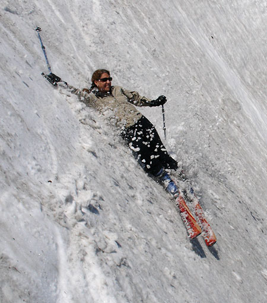
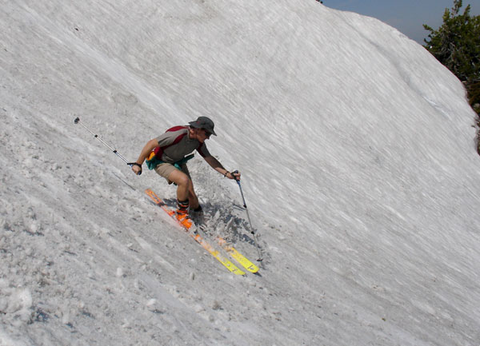
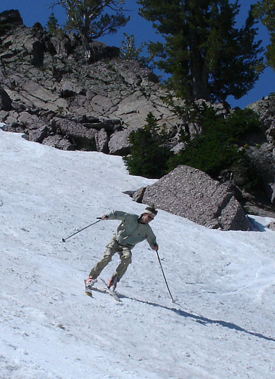
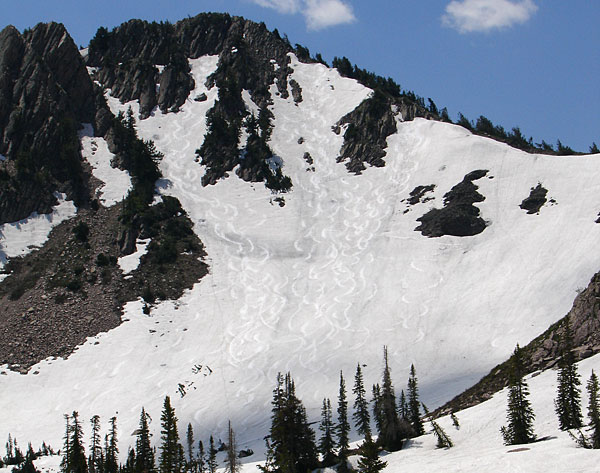

|
Snow Basin Bowling
The Freak is finally back in action. A bad bout
of viruses imported from Fort Collins, Colorado nearly killed him. And
internet dating has brought him even closer to death. But with wasatch
snow quickly dissappearing, he made a point to go out and get some before
the supply is gone for good... Or at least for a few months...

Here's yet another example of why it's dangerous
to go skiing with the freak:
You might end up on the internet in a picture like this! (Love Ya, T-lishous)

DH-1 shreds with a locals abandon. Thanks for
getting us up to your turf, DH.

When the freek was 8 years old, he was brutally
made fun of for how wide
apart his legs were when he skied. Some things never change...

Here's our beautimus tracks from three different
runs. To get to this bowl requires a brutal 2 minute walk from the gondola.
|